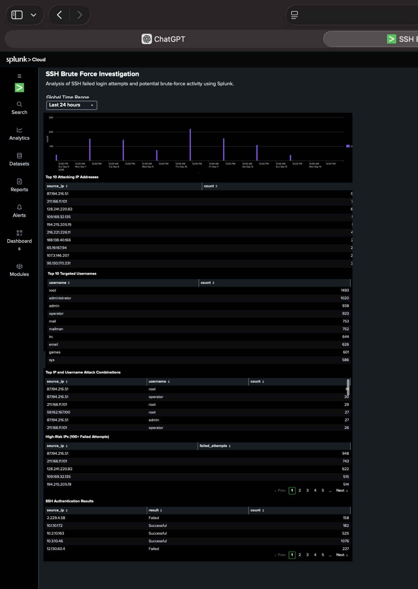

01
SSH Brute Force Investigation with Splunk
Investigated SSH authentication activity in Splunk Cloud to identify potential brute-force behavior, high-volume source IP addresses, targeted usernames, and suspicious authentication patterns. Built an analyst-focused dashboard to communicate the findings.
View GitHub Case Study →